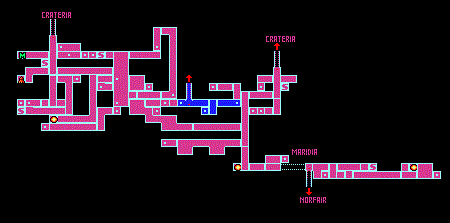

Brinstar: To get the map recharger, go down into the first door on the left (it's pink). Go left until you reach what appears to be a dead end. Roll into a ball and bomb. Go through the blue door and get the map recharger. Go back out into the shaft. The second door on the left is a saver. The top (pink) door on the right has a set of missiles. I have these numbered as 75, but you're able to get them now if you want. In the big shaft, go to the bottom and there will be two pink doors. The one on the left is a missile recharger, but it's a pain to get to, if you're going for time then skip it. Go through the one on the right. Keep going right until you reach a blue door (you'll need to bomb through a thick wall to get to it). Go right and fall down to the bottom where you'll get some missiles (20). Then bomb the obvious blocks and you'll fall and get charge beam. Jump out of that area and then go up to the top of the big room. Roll through the passage on the left to reach a saver. Once you've saved (if desired) go back out and to the right. Go up through the door and fight Spore Spawn. Once you beat him, jump up to the top of the shaft. Go through the door. In this next room you can use the bugs that come out of the pipe as an energy and missiles recharge. Go to the right. The second pipe is a fake. Stand on it and you'll fall through. Once you reach the bottom get your first super missiles (5). Go through the door on the left and keep going left and through the green door. Go left, you'll have to use a super missiles to get through this tunnel here. Go to the bottom of this shaft (right near where you got the charge beam). Go through the tunnel above the blocks and through the green door. Go down through this room and through the door (there is a gate that you'll need to shoot on the way). Jump up on top of the platform and run while holding B. Go through the green door. Go all the way down (you'll need to bomb the one section near the orange door). The green door on the left is an energy recharger. Go through the door on the right and keep going right until you reach the elevator. Go down it and into Norfair.
Norfair: Go into the first red door on the left. There will be and energy tank (2) and a path under neath it. Bomb to reach that path and go left. Go through the door (shoot the top of the wall) and get high jump boots. Go back out and jump up and get the missiles (25). Go out of the room (you have to kill all the guys before you can get out). Go back up the shaft (if you want you can save it in the room across from the room where you got high jump boots). Go back up the elevator into brinstar.
Brinstar: Go back in the door on the left. Keep going left till you get to the first red room. Go to the far left and shoot the block right above the door. Jump up in the slit and go right. Go into the door and get the spazer. Go back to the elevator. Then shoot one of the 3 blocks on the right with a super missile (I recommend shooting the bottom one). Roll through the hole and jump up into the creature's mouth. In this next room, bomb the floor right next to the door. Fall through the hole and down to the bottom. Disregard the locked door for now. Bomb bottom right corner of this room, then roll through the passage. Go into the door above you. Go to the far right and roll into a ball into the little square pit. Bomb and roll to the right. This leads you to a saver. Go back into the big room and look for a little crack, bomb and fall through it. Go into the door and keep going right till you reach the eye door. Defeat the eye door by shooting it with 1 super missile or 3 missiles. At the very left side of the room, shoot above you and it will lead you to a energy and missile recharger. Go in the what was the eye door and defeat Kraid. Once you've beat him go into the door on the right. You will get the varia suit in this room. Go back out to where the locked door was in the small green room. Go through the flashing door. Shoot up at the cracks in the ceiling, one will contain an energy tank (3). Go back out to the elevator and go down into norfair.
Norfair: Go into the first door on the right. Bomb the ledge to fall through and go to the far right. Jump up and go into the door on the right. Go to the right and into the second to last ditch. Roll into a ball and bomb in the lava on the right to get missiles (30). Go out of this ditch and to the right and in the door at the bottom. Keep going right until you reach a greenish bubble room. Go to the far right and you'll fall through a section of the bubbles. Bomb and go down to receive missiles (35). Jump up and out of the passage. The blue door on the left (above where you entered this room) is a saver. Go to where the two heads are and bomb the metal like platform. Roll through the maze-like thing and go into the door on the bottom. Fall down and go into the bottom door on the right. Keep going right until you reach a room with a pit, disregard the pit and continue through the door on the right. Keep following the passage until you come to a tall room with two doors on the right. Go into the pink one (top most on the right). Jump across the platforms and shoot the gate to get missiles (40). Go out of that room and back into the tall room. Go into the top door on the left and back into the bubble room. Go into the green door on the top right. Then shoot the ceiling and follow the path upward and go into the blue door. Hold B and run all the way right. Just before the door, shoot the ceiling to get missiles (45). Go into the pink door and get the speed boots. Go back out into the big bubble room. Go back into the maze at the bottom of the bubble room and take the door on the left. Go into the top door on the left and speed run through this next room. Go into the door on the left to find a saver. Go left out of the saver and up into the top door on the left. Speed run through this room and into the door on the left. Keep going left and through the door. Go up the path and bomb right by the door, staying to the right initially. You'll land on a small ledge and see a passage way leading to the right below you, fall down and over into the path. Go into the door and to get the Ice Beam. Go back out of that room and up and into the blue door at the top right. Go right (freeze the jumping things) and into the door. Fall down and bomb the pole on the right. Roll all the way to the right and go through the door back into the big room with the elevator. Go up the elevator back into Brinstar.
Brinstar: Keep going left until you reach a big tall red shaft. Freeze the monsters and use them as stepping stones to go up to the very top of the room. Go into the blue door on the right. Beware of the little flower-like things on the ceiling and floor, they suck the life out of you (taking off your high-jump boots might help you get through this room). Go through the door and bomb the floor in the middle. Fall down and go into the green door. Continue left until you reach a Chozo and your first power bomb (5). Try one out now and the wall behind the Chozo will destruct. Go left to receive missiles (50). Go back out and into the red shaft. Go up and into the green door on the left (if you want you can save in the blue door on the right). Kill all the monsters and power bomb the flower thing without a monster in it to get more power bombs (10). Go out of the room and go up the elevator into Crateria.
Crateria: Go up and to the left. Keep going left until you're in the area with your ship. Dash through all the blocks and past your ship. Go into the door on the left, past the first small pit and drop into the big pit. Go into the door on the bottom. Fall down the long pit (stay to the right) and land on the lowest platform on the right wall (towards very the bottom). If you have a decent amount of health, you can do this next part to get super missiles, otherwise skip this next part. Bomb and head through the passage on the right. Keep heading right until you reach what appears to be a dead end. Ultra jump up the shaft to get super missiles (10). Go to the left and just go across the thorns as quickly as you can. Go through the door and through the crack back into the long shaft and fall down to the bottom again. Go through the door at the bottom and into the room where mother brain used to be. Bomb where mother brain used to be and fall down to get some missiles (55). Go right and into the door (make sure to kill all the space pirates first). Go down the elevator into brinstar.
Brinstar: Go to the right and into the door. Go through this next door and on the right side of the room (before the big wall) shoot at the ceiling to reveal an energy tank (4). Go back out of this room, and keep going left (past the elevator) and power bomb where you got the morphing ball. Here you will get more power bombs (15). Power bomb again and keep going left and through the door. Fall off the ledge and now go to the right and down a bit. You'll see a pipe in a corner on the right. Freeze one of those little bug things and jump on them and into the pipe. You'll get missiles (60). Now go up and left and into the door. Go up through this room until you get to a blue door on the left. Continue going left until you get to the tall green shaft (if you fall down into a pit along the way, just ultra jump out of it). Go into the top door on the right. Use speed boost to run through the gates. Go through the door to get a reserve tank (1). Bomb the tube under the chozo in this room and roll under. Get the missiles (65). Then bomb right where the missiles were and keep bombing to get another set of missiles (70). Go out of the chozo room and stand at the edge of that ledge and shoot at the ceiling. Jump up and keep going left to get super missiles (15). Stand on the super missile spot to fall down. Go up on the platform again but don't super run. You'll fall through the floor and get some missiles (75) if you hadn't gotten them previously. Bomb the poll on the left and exit this room. I suggest saving (in the second door down on the left) before doing this next part since it's a little tricky and it will make it a lot easier if you save. Drop down to the bottom of the shaft and power bomb. Drop all the way down and go through the door on the left. There will be a room with leaches in it, roll into a ball and bomb to kill them. Go in the door to the left and you'll be in a room with a silver floor. Walk slowly through this room while shooting at the floor. When your gun goes through the floor it's fake. The first block to the right of the energy tank is real, but the next three are fake. Go back to the door on the right and super run towards the left, jumping about 5 to 7 blocks before the energy tank. If you make it over, then grab the energy tank (5) and go into the green door on the left. There will be super missiles in this room (20). Go back out and shoot the floor to make sure you know what blocks aren't real. Run and jump over them like last time and keep going right until you get to the shaft. If you are trying for all the items in the game then you can purposely fall down the fake floor if your really good at wall jumping (after you've gotten the super missiles and energy tank). If not then you can come back when you get space jump. If you fell through the floor accidentally then you can just turn off the game (if you saved like I told you to). If you didn't save it then you'll have to work a bit to get out of here. The door on your left is a saver, but I wouldn't save in here, because you might not be able to get out. Roll into a ball and go to the right (this is still if you didn't make the jump over the fake silver blocks). I'd suggest taking off your high jump boots for this room. Keep going right and go through the door. Put your high jump boots back on (if you took them off). Do as the etcoons (the little green guys) are doing and wall jump up the shaft. Once you make it to the first ledge on the left, you can bomb and be back in the long shaft. If you want, you can jump all the way up to the top to get power bombs (but it's almost impossible to get without spring ball). Now that you're in the long shaft (if you made it over the hole or not), go up to the place where you power bombed. This time go into the door on the right into the pink room. Keep going right until you get to the tall maze-like shaft. Go all the way down and into the door on the bottom right (by the place where you got the charge beam). Keep going right until you get to the long red shaft. Go down as far as you can (you'll need to use a power bomb at one point). The door on the left at the far bottom is an energy recharger. Go into the door on the right. Keep going right until you get to the elevator going to Norfair, and go down it.
Norfair: If you want to get the map, it's in the second door on the left (it's orange). Go into the first door on the left. Run through it, but don't go through the door. Power bomb to find an opening in the ground. Fall through it and go in the door on the left. Fall down this room and go into the door at the bottom. Speed run through this next room. You will end up in a room with a green door on the bottom and a blue door on the right. You can save in the second door up on the right (I'd recommend it because a boss is coming up next). Go into the green door on the bottom and fight Crocomire. Ignore what's to the right and go into the door on the left. The door on the bottom right in this room is a saver. Go into the blue door on the bottom and drop down the shaft. Go into the first pink door on the right and keep going right in this room to receive missiles (80). Go back into the long shaft and into the bottom door. Set off a power bomb to get rid of all the stuff. Now super run to the left and press down at the very edge of the ramp. Jump into the shallow lava and jump up. As you're falling back down, press right to get missiles (85). Go back to the long runway (if you roll into the pathway on the right of the missiles, you'll fall back down to it). Run again, but this time don't press down, just jump off the ramp to land on a platform with a blue door. Go into the door and you'll receive grappling. Jump up the small blocks on the left side, grapple across the ceiling and go into the door. Grapple over the water and go through the door. Go up to the top of this room and into the door on the top right platform. Grapple across this room, into the door, and then go through the door in the ceiling. Jump up onto the top right platform, and then grapple on to the flying creature on the left to get into the pink door on the top left. Inside are power bombs (20). Go back to where you fought crocomire (top right door) and grapple across the lava to the right. You'll get an energy tank (6). Go in the door in the ceiling and then go up and into the top door on the left. Go up and grapple to the left to get missiles (90). Go back out of this room the way you came, then go down the shaft and into the bottom right door. Go through this room and into the door at the end on the right (it's an energy recharger). Keep going right until you get to a long shaft (you'll have to roll through a passage to get to it). Go into the top door on the right. Keep following the path until you get to a tall room with more than two doors. Go into the top most door on the right. Go across the moving platforms to reach a gate (you may want to take off your high jump boots). Once you're through the gate, grapple across and go through the pink door to get wave beam. Go back out and into the tall room (make sure to grapple back across) and go into the top door on the left into the big bubble room. Use grappling to go across and into the green door at the top left to get missiles (95). If you happen to fall down before getting to this room, you can freeze the flying guys to get back up to it. Shoot the floor on the bottom left and a metal pipe will lift up. Bomb and roll through the crack and follow the path all the way to the left to get a reserve tank (2). Shoot the last little platform on the left to get missiles (100). Go back into the bubble room. Go into the blue door on the bottom left and keep going left until you get to the long shaft with the elevator. Go up the elevator and into Brinstar.
Brinstar: Go to the left until you reach the tall red shaft. Start to go up it until you get to the second door on the left (including the one at the very bottom). Go into this door to lead to getting X-ray scope. Try not to kill the little light bugs because they're the rooms only source of light. Grapple across until you reach a pink door and go into it. Jump onto the little ledge and roll into a ball. Bomb and a lift will take you up. Roll to the left and you'll fall. Here you'll receive the X-ray scope. Use your X-ray scope to find a passage out of this room. Go back out into the tall shaft and keep going upward. Once you get to the top, go into the door and to the right. Once you get to another tall shaft go up and take the elevator into Crateria.
Crateria: Go up through the door and keep going up, until you can't go up any farther (you'll have to shoot the ceiling). Now go to the right and through the door (your ship's towards the left if you'd like to save). Grapple across this room, making sure to get the missiles (105). Go through the door and you'll be outside. Grapple across until you get to a green door (you can grapple the little flying guys). Go into it and into the Wrecked Ship.
Wrecked Ship: The power is down in this ship, and the only enemies in it are Koben (little skull-like ghosts). Go to the right and through the door. The door to the right is a saver, but since the power isn't on, it's not working. Go down until you reach what seems like a dead end, bomb to find a passage down. Go through the green door in the floor and then to the right. Roll under the passage to find an eye door. Kill the eye and prepare to fight Phantoon. Once you've beaten Phantoon the power will turn on. Go out of the room where he was and to the left. If you go all the way to the left (past the door in the ceiling) there is a map recharger. Go out through the door in the ceiling. Go up until you come across a door on the left. Go into it to receive super missiles (25). Go out of the door and go to the right and bomb to find a passage. Go through this door and through this room. Use the X-ray scope to find the spot that you have to use super missiles on to get through (move the robot by shooting it). At the end will be some more super missiles (30). Go back out into the main area and up two platforms. Bomb on the left wall to find a passage leading to missiles (110). Keep going up all the way to the top (you'll need to shoot at the ceiling along the way), saving as you pass by it if you'd like. Go into the door at the top and go to the right. Go through the door and all the way to the end of the room to get missiles (115). Go back out and go to the left, past where you came in. Go through the door and out into Crateria.
Crateria: Start to head left (staying on the platforms) and jump on the little flying guys. Get onto the uppermost one and ride it all the way to the left wall. Crouch down and shoot to find some missiles (120). Fall off the guy and go to the left most area. Not too far away from the left wall is a little ditch. Shoot a super missile at the ground (in the middle of the pit) to find a passage. Roll through it to find some missiles (125). Go out of the passage and go to the right a bit using X-ray scope at the ground along the way. Keep going until you find another passage, and go into it. Keep going right, and after 3 doors, you'll be in the Wrecked Ship again.
Wrecked Ship: Grapple across to find a chozo statue. Roll into a ball in its hand and it will walk through the spikes and down to where a door is. Go through the door to receive Gravity suit. Go back out the door you came in and roll into a ball at the foot of the steps. Lay a power bomb to find a passage that will eventually lead to some missiles (130). Use a power bomb to blow away the wall (and chozo). Keep going right while using the X-ray scope on the ceiling. Soon you'll find a long passage way (not the one at the very far right that is visible without the X-ray scope). What you need to do to get up it is to go as far left as you can and super run. Then, right before the passage press down, line yourself up with the passage, and jump. Now, before you go for the reserve tank, use the X-ray scope to find a fake floor in front of the tank. Jump over it and get the reserve tank (3). Now, go back to the room where you got the Gravity suit and go through the door on the left.
Crateria: You'll fall down and probably into the water. Go back into the Wrecked Ship the way you went into it the first time.
Wrecked Ship: Go to the right and through the door. Now go down a little bit and you'll find a door on the right (right below the saver). Go into it and keep going right (through two more doors). Go up and into the top door on the left. Go on the moving platforms and all the way to the left to receive and energy tank (7). Go out of this room, and back into the door on the bottom left. Keep going left, until you get to the main shaft of the wrecked ship. Go up until you see a door on the left, and go in it. Go left until you get to Crateria.
Crateria: Fall into the water and go as far left as you can (in the water). Roll into a ball and bomb a few times to find a passage. Go into it to receive some missiles (135). Go out of the passage and the water and to the left. Keep going left (past your ship) until you can't go left anymore (you should be in a room with space pirates). Go down and through the door in the left. Keep going left till you reach the elevator into Brinstar.
Brinstar: Drop down and go into the second door on the right. Go through this room and through the door. Go to the right and drop down onto a little platform in the air. Grapple across to receive some missiles (140). Fall down in the little pit by the missiles and use X-ray scope on the left side to find a passage. Go through it and go to the left. Use X-ray scope on the floor towards the end to find a passage that you have to shoot a super missile at. Go though the passage to find some power bombs (25). Roll into a ball and bomb in the little ditch to the left of the power bombs. Roll to the right and bomb to bring a gate up. Go out of this room. You'll fall down sort of far. Jump up onto the platform to the right. Keep going up until you find a door on in the right wall (it should be orange). Go into it. Jump and grapple on the block and swing around to stand on top of it. Shoot the gate and jump up on to the platform. Fall down and go through the door to get an energy tank (8). Go back out of this room (shoot the floor to find a metal lift) and into the tall room. Fall down to the bottom and go into the place where you got charge beam. Use a power bomb to find a passage. Go into it and keep going left and through the door. Super run through this room to find an energy tank (9). Go back out of this room and into the tall room. Go into the door on the bottom right. There will be creatures flying out of this first tube. Freeze one and jump on it to reach a platform with an door. Go through the door and across the room. Bomb the wall to find a passage, and power bomb the next wall on the right and you'll be in the room where you first got morphing ball. Keep going right (past the elevator), and into the door. Go through the next door and to the far right of this room. Set off a power bomb to clear the blocks, then go all the way to the left and super run, press down right before the passage leading upward. Line yourself up with it and jump. Go into the door on the left. Jump up to find and invisible bridge. Walk across it and into the door to receive two sets of missiles (145 & 150). Go out of this room and back down. Go left past the elevator and keep going left back into the big green room. Go down and right and through the door. Keep going right until you reach the long red shaft. Drop all the way down into the bottom right door, and go right until you reach the glass tube in Maridia.
Maridia: Set off a power bomb to break the glass of the tube. If you drop down, the door at the bottom is a saver. Go up and into the door. If you want to get the map, then go into the door on the right and keep going right, and into this next door. Roll under the pink platform and fall down. Go into the door on the right to get the map. To get back where you were, go left as far as you can go, then go into the second from last ditch. Go left through the door and go into the door in the ceiling. Now, whether you got the map or not you should be in the big room above the glass tube. This next set of missiles is tricky to get an may take several tries. Go into the door on the right and shoot all the bad guys. Open the gate and the door you came into the room from. Now speed run from the right to the left and through the door, press down, then at the biggest plant jump straight up to get some missiles (155). Go up to the top of this room and through the door at the top right. Roll into a ball and roll to the right until there is a long drop. Drop off it in the ball form and hold left the whole time to find a passage leading to some super missiles (35). Roll out of the passage and go to the right, jump up onto the last little mound and then fall to the right of it. Go into the door on the ground. Go to the left and into 3rd ditch (including the first one). Roll into a ball and go to the far right. Bomb a few times to find a passage. Go through it and into the door. Go to the right and get on the turtle like creature. He'll fly up into the air. Grapple onto the block and swing around to receive an energy tank (10). Now fall down and stand on the turtle again, but this time shoot at the right wall all the way up to reveal some missiles (160). Go out of this room and roll back through the passage. Jump out of the pit and go to the left. You'll find a door in the bottom of the left-most pit. Go in the door and go left. Go up as far as you can and into the top right door. Now, this time grapple across all the way to the door on the far right at the top. If you fall down, the floating creatures can give you a little lift up if you grapple onto them. Go up through this room and into the door on the ceiling. Go to the right and walk right through the wall to find missiles (165). Go out of the missile area. Go up and to the left and through the door. Go as far left as you can in this room until you come to what appears to be a dead end. Jump up a bit and to walk through it. Go up through the door on the left, then keep going left and then drop down to find missiles (170) and super missiles (40). Go back out the way you came back and into the tall room with pink pipes. This time bomb floor and fall down. Go into the door on the right. Use a power bomb to expose a passage down. The door at the bottom left is a saver. The little spikey-rolly guys can be killed with bombs or power bombs. Super run from the left to the right until you see a little passage on the right leading up. Press down right before it and jump up into it. Go to the right to find missiles (175). Go a little further right, but be careful of a fake floor, to find super missiles (45). Drop down using the fake floor to the left of the super missiles. Ignore the door on the right and go left to get back to where you were. Grapple up the walls and to the left. You'll find a door in the ceiling, go into it. Shoot the metroids as well as parts of the wall and make your way to the right (you'll have to speed run for part of it). Go into the door on the right and fight Botwoon. Once he's beaten, go in the door on the right. Speed run through this room and go through the door. If you're low on missiles you can bomb the right wall on the ground to find a passage leading to a missile recharger. Grapple your way up to the top and go into the door on the top right. Grapple all the way across this room. The door on the top right has a saver and an energy recharger (which I recommend going to, since you'll fight Draygon next). Go into the door on the bottom right and grapple across the room. Shoot the right wall to find some missiles (180). Go back and fall into the left-most set of spikes (they're fake, they won't hurt you). Move around a bit until you fall though. Drop down to the bottom. Beat the eye door and prepare to fight Draygon. Once he's beaten, go into the door on the left to get space jump. Space jump to get out of the place where you fought Draygon. Go back up through the fake spikes. Grapple your way back out of this room and to the left into the door. In the tall room, go in the upper door on the left. Space jump through this room all the way to the door on the top left. Drop down and go into the door. Go left and into the door. Go left as far as you can. Now jump on the platform to the right and go up towards the right. There should be a door to your right (not the one you came in), disregard that and go as far left as you can without dropping down. Space jump up onto a ledge on your right with a door. Go into it and go up and into the top right door. Go right and through the door. Drop down and in the bottom right corner you'll find the Plasma Beam. Go out of where the plasma beam is and back into the big yellowish room you were just in. Drop down to the very bottom left corner. Jump up, staying close to the left wall until you see an opening on the left with a door in the floor. Go into the door, it will take you to the bottom of Maridia. Drop down, bomb, and go into the door on the right. Go across this room and into the door. Shoot the grappling to find a passage. Go up in it. You can use space jump, wall jump, or bomb you way up this shaft. Once you reach the top go to the right and fall through the floor. Go into the door on the right. Use a power bomb to get rid of the wall, but DON'T get rid of the crawler guy, he will get rid of the sand for you. Once all the sand is gone, go through the door. Roll into the ditch and to the left. Keep rolling to reach the spring ball. Go out of this room (using your spring ball). Go back out of the room with the crawler guy. Drop down (you may have to bomb) and go through the door. Keep going left until you reach a room with a broken glass tube. Roll into a ball and go below the two blocks to fall through the floor. Go left through the door and all the way to the left of this room. Go in the second pit from the left and you'll fall through a false floor. Go left through the door, and then up the next room through the door in the ceiling. Go up to the very top of this room and into the door on the top right. Grapple across and go into the door on the right. Bomb and drop down. Go into the door on the right and set off a power bomb. Make your way back up to where you fought botwoon. Once you're where you fought botwoon, go into the door on the right. Power run through here, but don't go through this door. Use spring ball to jump up onto a ledge on the right part of the chuck in the middle (that's hanging from the ceiling). Roll to the left to find an energy tank (11). Go out of the passage and drop down through the sand. Go left and into the door. Drop down and go all the way to the right. Bomb around to find a passage way. Go into the passage. There are two sand pits on your left, the one on the right gives you a set of missiles (185) and power bombs (30). The one on the left gives you a set of missiles (190) and a reserve tank (4). Both sides are like little mazes, use the X-ray scope to get to the items. Once you've gotten the items drop down into the sand and let it pull you down. Go as far left as you can go. If you want to get the items from the side you didn't go in, then go up and repeat that process (except for the part to get the 10th energy tank). Go into the door in the floor. Go in the door/opening in the middle on the right. Go through the next door and into Brinstar.
Brinstar: Go down the Elevator and into Norfair.
Norfair: Drop down, and go into the bottom door on the right (the one before you have to bomb the floor). Save in this room if you'd like, then go into the door on the right. Keep going right until you can't go right anymore (you should end up just below the bubble room). Go into the door in the floor. Drop down and go into the bottom right door. Go through this room and into the door. Drop down and go into the door on the bottom left. Jump down into the lava (the gravity suit will protect you). Go to the left and space jump up and out of the lava. Walk right through the mouth and go through the door. The door on the left of the elevator is a saver (I'd suggest saving because you're heading toward Ridly). Go down the elevator. Go to the left (beware of this lava, it will hurt you) and through the door. Space jump over the lava pit and onto the ledge. Use a power bomb, then roll into a ball in the chozo's hand. The lava will drain. Drop down and bomb to fall through. Bomb the floor and roll to the right. Go through this room and through the door. Use your X-Ray scope to see the fake floor and space jump over it to receive missiles (195). Fall through the fake floor and move over to the right to fight the Golden Chozo. Once you've beat him, go into the door on the right to receive screw attack. Go back into the room where you fought the Golden Chozo. On the right side of the room, screw attack up and break through the ceiling to find some super missiles (50). Go back into the door on the right, and screw attack through the ceiling. The first door on the right is an energy recharge. Screw attack through the ceiling again, and go through the door on the right. Go through this room and through the door. Go through the door on the right and then screw attack through the columns in this room. Go through the door. Screw attack all the way to the top of this room (you may need to shoot the ceiling), and go through the door on the left at the top. Shoot the middle two blocks in the floor to drop through. Go all the way to the left and bomb (the floor to the right will fall through, so be careful) and roll left into the passage to find some missiles (200). Go back out of the passage and back up the way you came through the door. Drop down through the floor and go through the door on the right. Fall down and space jump up and towards the right. There is a door in the top right corner, but you'll need to go left a bit to get onto the platform on the top right. Go through the door and then bomb the floor to find a passage. Drop down through it. Keep going down, the first door on the right is a saver, go all the way to the bottom. Bomb the floor at the bottom and roll through the passage. Go through the door in the floor. Use spring ball to jump into the opening in the left wall and bomb to find a passage. Keep going left through this room and set off a power bomb in the far left end of the room. Ignore the big passage going down, and go into the little passage in the left wall. In here you'll find some power bombs (35). Go back out through the passage and drop down the big passage. Go down and go into the door on the bottom left. In here you fight the Space Pirates. You'll need to wait until they turn a gold color to shoot them. You can use super missiles, missiles, or charge beam to shoot them. Once you've beaten them, go into the door on the left. Keep going left until you find the eye door. Beat the eye door and go through the door to fight Ridley. Once he's beaten, go into the door on the left. Use the X-ray scope to scan the bottom right corner and find an energy tank (12). Go back out the way you came to where the saver in the long shaft was. Go up through the ceiling and into the door on the right. Go straight and walk right through the wall. Go to the right and drop down through the floors. Go to the left and fall off the cliff to land on a small platform. Space jump over the spikes to the right to find an energy tank (13). Space jump back onto the cliff and space jump up the passage in the right. Walk back through the wall. If it's kind of dark in the room now, you can go through the door and back into this room. Go all the way up. Ignore the door on the right, and bomb the left wall. Go through the passage and go through the door on the left. Go to the left, then up. Go to the right to receive some missiles (205). Use the X-ray scope to find a passage to the right. Roll through it and go through the door in the floor. Bomb on top of the statue on the right to get some power bombs (40). Stand on the statue on the left and go through the door on the left. Go through the passage in the left wall and go through the door. Go left then up and through the door on the top left. Go left through this room wait until the lava recedes to roll through the passage in the floor. Jump up to the first passage and bomb to find another passage heading left to a room with some missiles (210). Go back out of that room and go up. Go through a passage in the ceiling and then in the door on the left. Keep going left, falling through blocks and breaking through blocks until you get to a passage. Roll left through it and into the top left door. Go up and drop down to the left. Go to the bottom left corner and bomb. Fall down and go through the door on the left. Go over the pit and through the door on the left. Speed run through this room. Go through the door and through the saver room out into a big long shaft. Go up and into the top left door. Speed run through this room and power bomb at the end. Drop down and go left. Go into the door, but DON'T move. Stay on the little ledge and shoot the wall (or use the X-ray scope) to find some missiles (215), space jump over and get them. Go back in the door that you came in. Go right and power bomb. Go up and take the passage above the gates. Go to the right and out of this room. Go up the elevator and into Brinstar.
Brinstar: Go right (you'll need to shoot the wall with a super missile). Jump up through the mouth and go through the door. Bomb to drop down and in the bottom right, bomb and roll through the passage. Go up through the door. Go to the right (but not through the passage) and set off a power bomb. Use spring ball to jump up and over and to receive some missiles (220). Go back to the elevator. Go to the left (through Maridia) until you get to the tall red shaft. Go all the way to the very top of the shaft and go into the door on the right. Go through this room and into the door. Go all the way up and take the elevator into Crateria.
Crateria: Go up (shooting at the ceiling) and left through the door. Go through the next door. Go up the platforms up onto the big piece of land to the left. Now space jump up and you'll see a ledge on the right. Jump onto the ledge and go into the door. Go through the room to find some power bombs (45). Go back out of the room and drop off the ledge. Fall down to where your ship is. Space jump up the left wall and eventually screw attack will break through to reveal a passage. Go through it and into the blue door. Make your way left through this room (breaking blocks) and in the next room you'll find an energy tank (14). Roll into a ball and bomb to find a passage. Go through it and use screw attack to go left (the spikes at the far left end are fake). Go through the door. Now this may be tricky. There is a big long passage that falls down 4 blocks wide, with missiles on either side. If you can get both sides to break away then you can get both missiles, if not, you can just come back and get the other ones. Go down and get the missiles (225 & 230). Drop down as far as you can (bombing along the way) and go into the door on the left (if you're going for time, then skip this next part, all it is, is some power bombs). Go left until you get to the elevator to Brinstar. Go down the elevator and into Brinstar.
Brinstar: Drop down and power bomb. Go into the door at the very bottom on the left and purposely fall through the fake blocks. Go to the right, and into the wall jumping place. Space jump all the way to the top and land on the platform to the left. Use spring ball to jump into the passage on the right. Roll through it to receive some power bombs (50). Now you have all the items. Go back to the elevator to Crateria and go up it.
Crateria: Keep going right until you get to a room with statues of the bosses. The floor below you should fall away and you should end up at an elevator. Go down it and into Tourain.
Tourain: Go down, the door on the right is a saver. Go into the door on the left. Follow the path (there aren't any secret passages in Tourain) until you get to the room with the big metroid (she sucks your health down to 1). Shoot through the barnacle-like stuff on the left. Shoot down through all of it. The door on the left is a missile and energy recharge. Go into the door on the right. Go to the right and beat the eye door. Go through what was the eye door and drop down. The door in the middle left is a saver, but one of the doors leading back to Crateria is locked, so you'll never be able to get out of Tourain (except for beating Mother Brain). Go into the door on the bottom left. Shoot at all the goo filled glass tube-like things and go left to reach Mother Brain. Once you've beaten her, you'll have to escape back to your ship. The hyper beam can blast through a lot of things, so keep shooting. Keep going, through the mazes and out into Crateria. Go to you ship. If you want you can go into the room where you got the bomb and fought the Chozo. Shoot the right wall to let Drachola and the Etecoons out. When the planet is exploding you'll see something fly out the right side, that's them.
Space Colony: You start out in the Space Colony. Just go through it (it's a dead path, no choices) until you get to a room with the metroid. This is where you fight Ridley. Once he flies away try to get to the elevator in less than a minute (don't worry it's really easy). The space colony will explode and your ship just will just barely escape. You will then land on planet Zebes.
Crateria: Go to the left of where your ship landed. Go through the door. Keep going left until you reach a pit Go to the bottom of the pit, disregard all doors on the sides. Go through the door on the bottom. Fall down the shaft (if you go on the far right you won't hit any blocks for a while). Go through the door and keep going right until you reach an elevator. Go down it.
Brinstar: Go to the left. Jump up and over the blocks and get the ball (morphing ball). Don't worry about the eye thing it's harmless. Shoot the little block on the right and roll under it. Go to the right, past the elevator, and through the blue door. Shoot down and you'll fall through the blocks. Go into the door on the left. Inside are your first missiles (5). Go back up and go through the pink door on the right, you'll need to use 5 missiles. Keep going right and roll under the blocks to get missiles (10). Go back to the elevator and go up it.

Crateria: Go through the door on left, be careful, there are going to be space pirates in the room and some rooms to come. Go up the long shaft, the steps are in a pattern so it's not too hard. Go through the door and keep going up, disregard all doors except for the one on the left that you have to tunnel to get to. There's a saver in that door. Go all the way up and to the right. Roll into a ball and go down in to the pit. Go into the blue door on the bottom. You can go into a ball and roll through this next room so the bats can't get you. You can shoot the pink door and then kill the bats to regain the 5 missiles you just used. Go through the door and get bomb from the statue. Immediately after getting them you will have to fight the Chozo Statue.
Once he is defeated, go left through the door. Go up and out of the shaft using the passage on the right. Go down the shaft on the left and go through second door on the left. Keep going left until you reach some missiles (15). Go back into the shaft. To get the map recharger, go through the pink door on the right and keep going right. Go back out and up the shaft. Then go to the left and bomb. Go through the blue door. This next room in on a slant. At the end of it is your first energy tank (1). Go through the door on the left. In this next room there are space pirates that require missiles to kill. Once you reach the bottom go through the door on the left. Keep going left until you reach the elevator. Go down it and into Brinstar.